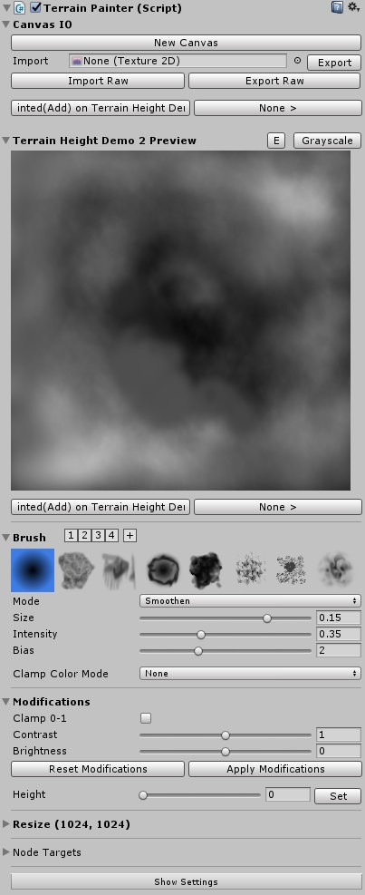

Documentation
Getting Started
- Get TerrainComposer 2 from the Asset Store, download and import it.
- Get TC2 Node Painter from the Asset Store, download and import it.
- Create a new TC2 project through the TC2 window ('Window/Power of Nature Software/Terrain Composer 2')
- Add a node to the graph for painting, eg. in the height output
- Add the TerrainPainter script to that Node. You will be presented with the Terrain Painter UI
- Create a new canvas by specifying a desired resolution and start painting!
Interface Explanation
Canvas IO
This section is for creating, loading and saving the canvas.
When there is no canvas loaded, you can create a canvas using the GUI in the outlined box, specifying size and color/grayscale format.
Canvas IO works for both raw and png image formats. To load a png file, drag it into the 'Import' object field, and save it using the button next to it.
Raw files can be handled in up to 32Bit using the 'Import Raw' and 'Export Raw' buttons below.
Under this region are two Undo buttons.
Preview
Here you can get a preview of the canvas and also paint directly on it using the GUI.
You can specify borders around the preview in the settings to aid painting the edges.
At the right to the header you can edit the canvas name and see the painter's ID by clicking on the 'E' button.
You can also switch between color and grayscale modes after creation by clicking on the rightmost button.
When in color mode, you can select which channels to show in the preview from the toolbar below the canvas preview.
Due to the size of the canvas preview you have yet another two Undo buttons below this region.
Color
Only shown on Color mode, this region allows you to edit the color and it's intensity and save it to a preset bar next to it's header.
Brush
This region is for editing the current brush and once again saving it to the numerated brush preset bar next to the header.
You can choose between various brush shapes here, the first one being an adjustable functionm the others being 512px brush textures.
The mode dropdown let's you choose between different blending modes of the brush. For a detailed overview on these, see 'Blend Modes Explanation' below.
Furthermore you can adjust size, intensity and additional mode-specific options like Factor and Bias here.
Finally, the clamp color mode allows you to clamp your input to the current selected color/value or 1.
Modifications
This regions applies post-effects onto the canvas, not affecting the currently saved canvas until applied. When any modification is active, a warning symbol appears next to the header.
Clamp 0-1 clamps the canvas to the values 0 to 1, after adjusting the brightness and contrast using the sliders below.
As it is a post-effect until explicitly applied to the canvas, you can reset and apply them using the apropriate buttons.
Additionally, not being a post-effect modification, you can set the canvas to an uniforma value/color in this region.
Bottom
In the 'Resize' region you can resize your canvas here, the content is apropriately up- or downscaled.
In the 'Node Targets' list below you can specify to which nodes the canvas is automatically applied to.
Pressing the 'Show Settings' button at the very bottom opens up the settings window for Terrain Painter.
Blend Modes Explanation
There are 8 blend modes available:- Add / Sustract:
Add or substract the brush value to/from the canvas - Multiply / Divide:
Multiply or Divide the additionally specified Factor with the strength of the brush value with the node value - Overlay, Screen:
Alternative blend modes to add values ontop of the canvas with smoother response - Smoothen / Contrast:
Decrease or Increase details on the canvas texture with detail level specified through the bias property